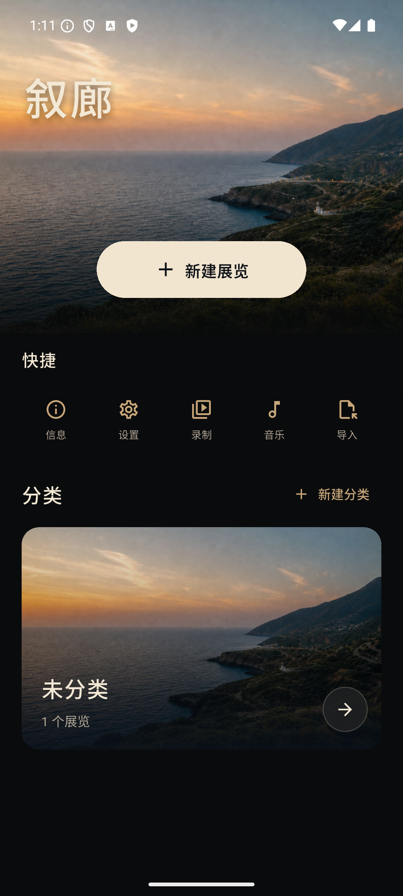

本地创作，不是云相册。
章节与叙事路径
用布局、远近关系和节奏让照片自然地连成故事。
画框、题字与装饰
手绘画框、留白题字、自由文字和内置中文字体可移动、旋转并持久保存。
沉浸播放与录制
在 Android 10+ 上播放展览，添加背景音乐，或在主动授权后录制 MP4。
没有账号，没有网络权限。
叙廊不上传照片、音乐、模板、视频或展览数据。
No account, cloud sync, analytics, or network permission.